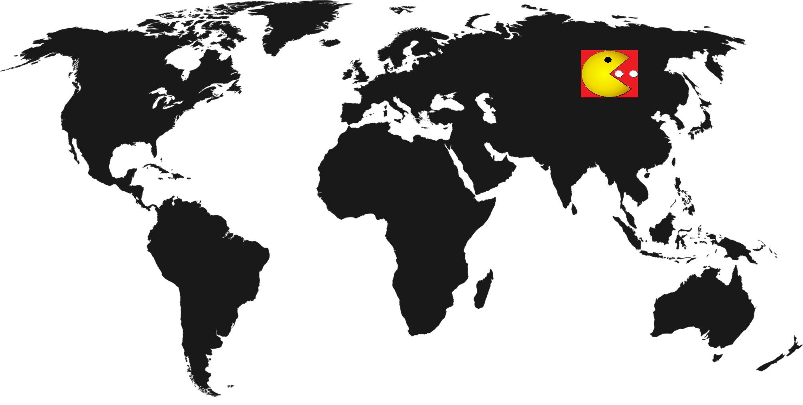
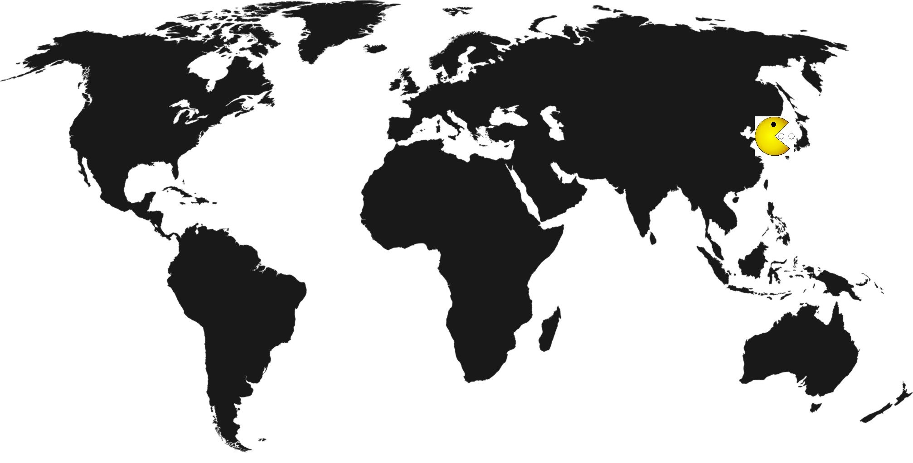
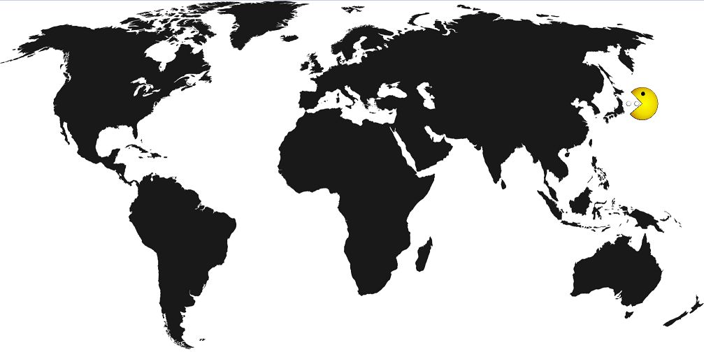
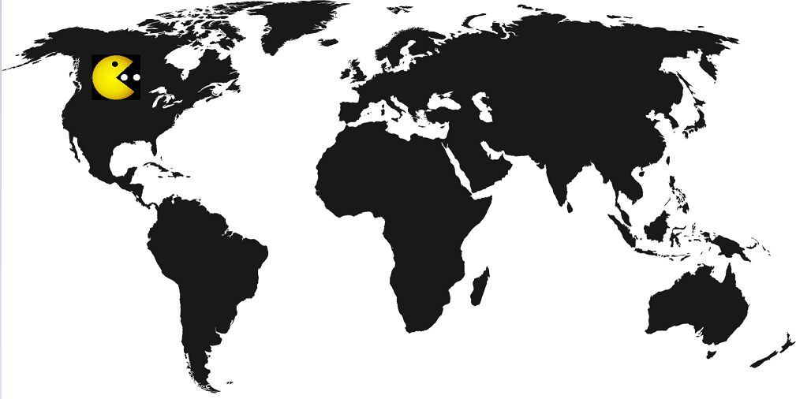
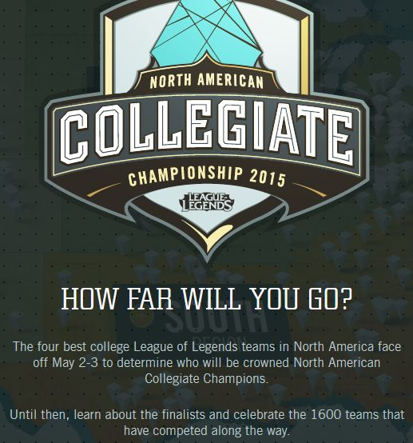
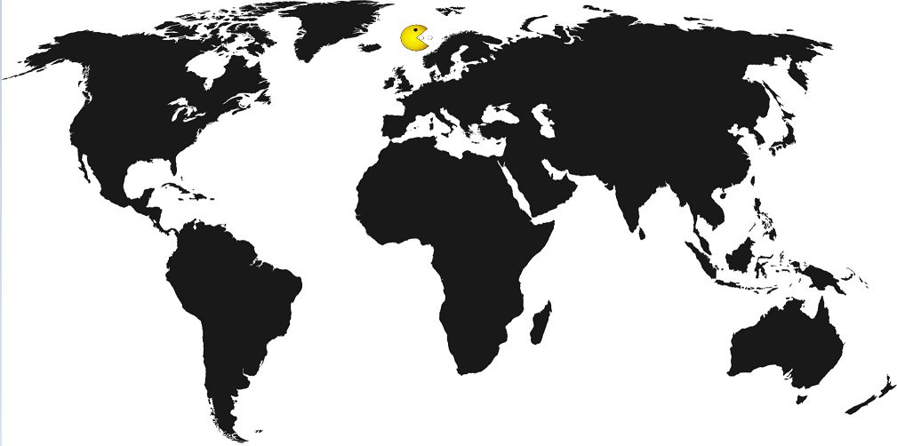

E-Sport - ein Blick auf übergeordnete Strukturen und einzelne Länderbeispiele
5.1 gesamtgesellschaftlicher Kontext
Auf der letzten Ebene soll es nun darum gehen, das Phänomen E-Sport in einen gesamtgesellschaftlichen Kontext einzuordnen. Hier wird insbesondere im Fokus stehen, ob und welche neuen Prozesse und Entwicklungen E-Sport anstößt bzw. anstoßen kann. Resultierend aus den Ergebnissen der anderen beiden Ebene, wurden folgende Forschungsfragen formuliert:
4a) Etabliert E-Sport - gerade im Sportbereich - neue Standards?
4b) Entstehen neue Vergemeinschaftsungsprozesse durch E-Sport?
4c) Welche Kommunikationsmuster formen sich durch E-Sport - gerade bei der Fankommunikation - aus?
4d) Handelt es sich bei E-Sport um ein transkulturelles Phänomen?
5.2 neue Standards
4a) Etabliert E-Sport - gerade im Sportbereich - neue Standards?
Während des Portfolios wurde immer wieder darauf hingewiesen, dass es sich bei E-Sport noch um ein vergleichsweise junges Phänomen handelt. Nun ist die Frage, ob E-Sport tatsächlich so "neuartig" ist, wie man vermuten könnte - gerade im Vergleich mit bereits etablierten Großsportarten. Es ist naheliegend, hier einen Vergleich mit Fußball anzustellen. Nicht nur die E-Sport-Szene selbst zieht immer wieder Parallelen zu dieser Ballsportart sondern auch die Medien. Zudem ist Fußball ein globaler Sport, der weltweit - mit mehr oder weniger Intensität - gespielt wird.

Zunächst möchte ich aber kurz erläutern, was ich unter Standards verstehe. Dazu ziehe ich die Definition heran, die man im Duden findet: "Standards: etwas, was als mustergültig, modellhaft angesehen wird und wonach sich anderes richtet" (vgl. duden.de). Die Frage, die sich in Bezug auf E-Sport noch stellt ist, ob hier Standards etabliert werden, die klar kulturspezifisch sind oder ob sich nicht auch transkulturelle Ausprägungen vorfinden lassen. Auf diese Frage wird aber im speziellen noch bei Forschungsfrage 4e eingegangen.
Anhand der bereits angestellten Untersuchungen lassen sich mehrere Beispiele dafür finden, dass E-Sport eigene Standards setzt bzw. versucht zu setzen. Auf der Mikroebene wären das zunächst die Kommunikationskanäle, die sich die Szene zu Nutze macht. Gerade durch die Plattform Twitch entwickelt sich eine viel unmittelbarere Kommunikation zwischen Spieler und Fan, als es in anderen Sportarten möglich ist. Wann kann ein Amateurfußballspieler schon einmal gegen eines seiner großen Idole antreten oder in Echtzeit mit ihm in Kontakt treten? Über Social Media Plattformen wie Facebook und Twitter ist zwar auch eine direkte Kontaktaufnahme möglich, diese findet teils dennoch zeitversetzt statt. Im Unterschied hierzu können Fans bei einem Live-Stream nicht nur live Wettkämpfe verfolgen, sondern auch mit den Spielern in Kontakt treten und ihnen mittlerweile während des Spiels sogar Spenden zukommen lassen. Bei Twitch gibt es nämlich seit dem letzten Jahr die Möglichkeit, über einen Button Spenden auszuführen.
In einem Artikel des Gaming-Magazins Game Zone wird über einen speziellen Spenden-Fall berichtet. Demnach habe der User mit dem Pseudonym "Amhai" innerhalb eines Monats mehr als 100.000 US-Dollar als Spende an einige Broadcaster verteilt. Tatsächlich seien die Summen auch bei den Spielern angekommen (kein Troll-Account). Dass Fans ihre Zuneigung zum Sport und zu bestimmten Spielern ganz gezielt zum Ausdruck bringen können, leitet zu einem weiteren Punkt über: die Finanzierung im E-Sport.
Das unten eingefügte Video zeigt meiner Ansicht nach sehr anschaulich, auf welchen Ebenen E-Sport funktioniert und was die Neuartigkeit zu anderen Sportarten ist: Unmittelbarkeit und Mediennutzung. Der Fan kann nicht nur live mitverfolgen, wie ein Spieler spielt, sondern auch, wie er live Geld verdient. Dieser voyeuristische Aspekt, ermöglicht dem Fan so viele Nähe zu seinem Fanobjekt, wie nie zu vor. Jeder Spiel-Schritt kann beobachtet werden. Noch nie war es für Spieler und Teams so leicht, auf sich aufmerksam zu machen und eine Plattform aufzubauen. Dabei entstehen Nähe und Unmittelbarkeit nicht nur durch das Medium Internet selbst, sondern auch durch die Umgangsformen innerhalb der Szene. Der Spieler sitzt in seinem eigenen Zimmer, im Hintergrund sieht man noch eine Plüschente. Hier handelt es sich nicht um eine künstliche Studiosituation - im Gegenteil, der User erhält einen Einblick in die Alltagswelt des Spielers. Man könnte argumentieren, dass E-Sport sich so seine "Echtheit" bewahrt. Eine Authentizität, die vielen durchkommerzialisierten Sportarten wie Fußball mittlerweile immer mehr abhanden geht. Nicht umsonst wird deswegen bemängelt, dass Fußball seine traditionellen Werte verloren habe: "Aber wie soll die Liga auf die Hopps und Kinds reagieren, die sich mit ihren Millionen in die Vereine einkaufen, auf die Werksclubs und die von Konzernen (VW, Red Bull) gepushten Emporkömmlinge aus Ingolstadt oder Leipzig?" (Bellinger: 2015 ndr.de).
Gamer erhält Spende in Höhe von 10.000 US-Dollar
5.2 neue Standards
In meinem Fragebogen habe ich den Teilnehmern die Frage gestellt, ob sie neben E-Sport auch andere Sportarten verfolgen. Ein Teilnehmer schrieb als Antwort auf diese Frage:
"Ja ich verfolge die Bundesliga und vor allem Borussia Dortmund. Im Prinzip sind es dieselben Gründe: spannende Spiele und teilweise auch die Geschichten der Spiele und Spieler. Wobei, gerade beim Fußball merkt man, wie sehr doch alles vom Geld regiert wird. Häufig beschleicht einen das Gefühl, dass viel inszeniert wird und über Tradition und Verbundenheit geredet wird, doch sobald jmd. mit dem großen Scheck winkt, ist da alles vergessen. Das stimmt einen dann doch nachdenklich und das ist ein Problem, was ich als Fan habe. Sobald ich das Gefühl bekomme, dass die Fans den Leuten egal sind und nur überlegt wird, wie noch mehr Geld aus dem ganzen Geschäft und damit auch aus den Fans gewonnen werden kann, ist es schnell für mich vorbei und ich wende mich ab. Gerade dieses Gefühl habe ich noch nicht beim E-Sports. Da sind die meisten Akteure doch ziemlich direkt und emotional mit der ganzen Szene und den Fans verbunden. Das kann unter Umständen natürlich zum Problem für die Spieler werden, gerade wenn es nicht so läuft und ihnen die Abneigung der Szene entgegen schlägt. Aber ich hoffe, dass da in Zukunft ein gesunder Mittelweg gefunden wird und es nicht nur zum Geschäft wird."
Was dieser Kommentar bestätigt, ist die bereits oben angesprochene Problematik, der sich Großsportarten nach einiger Zeit stellen müssen - dem Drahtseilakt zwischen Kommerzialisierung und Tradition. Denn was auch aus dem Kommentar hervorgeht ist, dass Fans oftmals eine hohe emotionale Bindung zu ihrem Fanobjekt aufbauen. Diese Bindung führt im E-Sport momentan offensichtlich dazu, dass Fans dazu bereit sind, die Szene nicht nur durch ihren Zuspruch oder dem Besuch von Turnieren zu unterstützen, sondern im hohen Maße ebenso durch finanzielle Mittel. Wenn Fans nun aber den Eindruck bekommen, dass sie nicht mehr als eine der wichtigsten Säulen für das Funktionieren ihrer favorisierten Sportart, Teams, Vereine etc. anerkannt, sondern nur als reine Geldquelle "missbraucht" werden, stirbt ein essentieller Bestandteil von Sport aus: die Liebe zu ihm. Natürlich kann keine Sportart den Sprung in die Massentauglichkeit schaffen, ohne gleichzeitig einen hohen Grad an Professionalisierung aufzubauen. Und eben diese führt oft zu Standardisierung und Pragmatismus.
Doch der E-Sport-Branche scheint es momentan noch zu gelingen, einen Mittelweg zwischen "ehrlichem" Sport und Kommerzialisierung zu bestreiten. Dies mag zum einen daran liegen, dass sich noch herauskristallisieren muss, wer letztlich im E-Sport überleben und sich durchsetzen wird, und wer nicht. Ein anderer Grund könnte zudem sein, dass die Hauptakteure, die derzeit die Branche mitgestalten, aus derselbigen entspringen. Somit mischen noch nicht viele externe Instanzen mit, die keinen anderen Bezug zur E-Sport-Szene haben als den, möglichst viel Kapital aus ihm schlagen zu wollen.
Wenn es den Verantwortlichen gelingt, diesen Mittelweg auch langfristig aufrecht zu erhalten, so könnte E-Sport tatsächlich neue Standards dafür setzen. Standards dafür, wie es gelingen kann, eine erfolgreiche und massentaugliche Sportart aufzubauen, ohne einem neo-liberalen Optimierungswahn zu verfallen.
5.3 Vergemeinschaftungsprozesse
4b) Entstehen neue Vergemeinschaftungsprozesse durch E-Sport?
Wenn man der oben angeführten Argumentation weiter folgt, könnte man auch fragen, ob aus neuen Standards nicht auch neue Vergemeinschaftungsprozesse folgen könnten beziehungsweise beide Entwicklungen parallel zueinander laufen. Gemeint ist damit an dieser Stelle, dass "Subjektivierungs-, Pluralisierungs-, Individualisierungs- und Globalisierungsprozesse" (Hitzler 2008: 9) dazu führen, dass traditionale Gesellungsformen wie die Familie, die Nachbarschaft, Vereine und Verbände nicht mehr die Bedeutung haben, die sie einmal hatten (vgl. Schmuck 2009: 4). Hauptmerkmale dieser neuen Vergemeinschaftsprozesse sind ähnliche Lebensziele und ähnliche ästhetische Ausdrucksformen (vgl. Hitzler 2008: 9).
Im E-Sport lassen sogar auf zwei Ebenen Vergemeinschaftungsprozesse finden: der realen und der virtuellen. Wobei zu klären ist, ob die virtuelle die reale nicht sogar um Längen überwiegt, da Spieler und Fans oftmals zum ersten Mal auf Live Events in real aufeinander treffen. Zu berücksichtigen ist hier allerdings, inwiefern es sich bei rein virtuellen Gruppen auch um soziale Gruppen handelt, da Anonymität und Fiktivität die Möglichkeit bieten, "losgelöst vom Druck der Orientierung an gesellschaftlich vorgegebene Normen seine Interessen ausleben" (vgl. ebd. 2009: 28). Ein Problem von Anonymität im Netz ist demnach, dass keine glaubhafte Identität gesichert ist, da Spieler mehrere Identitäten annehmen können (vgl. auch ebd. 2009: 28).
Allerdings kann man davon ausgehen, dass gerade innerhalb von Clans mehr Transparenz vorherrscht. Clanmitglieder müssen sich zwangläufig schon alleine durch ihre Präsenz bei Offline-Tournaments in der Öffentlichkeit zu erkennen geben. Ein weiteres Indiz für die eindeutige Zurechenbarkeit eines Clan-Spielers stellt eine Regel der ESL dar. Sie beinhaltet, dass ein und dieselbe Person nur in einem Clan Mitglied sein und nur einen Spielernamen haben darf (vgl. Electronic Sports League 2008c). Große Clans und Ligenausrichter operieren mittlerweile auch mit strengen Reglements (vgl. Doping, Betrug vorbeugen durch spezielle Software), um mehr Kontrolle auszuüben. Diese führen dazu, dass der soziale Druck, mit den Regeln konform zu gehen, erhöht wird. Schließlich sind es gerade die gemeinsamen Ziele der Mitglieder eines Clans, sowie feste Hierachien innerhalb dieses Gefüges, die dazu führen, dass ich Clans als eigenständige soziale Gruppe bezeichnen würde.
Eine Frage meines Fragebogen bezog sich darauf, ob die Befragten E-Sport verfolgen und wenn ja, was sie daran am meisten interessiert. Hier wurde hauptsächlich der Wettkampfcharakter in den Vordergund gestellt. Einer der Befragten schrieb ganz konkret: "Man vergleicht natürlich automatisch seine eigenen Fähigkeiten mit den denen, die man dort [Twitch] sieht. Das ist z.T. schon sehr beeindruckend und auch motivierend/inspirierend was die Spieler dort zeigen. Zudem ist es auch teils sehr unterhaltsam was und wie die Spieler ihre Streams gestalten." Durch den Wettkampf kommen Spieler und Fans miteinander in Kontakt und schöpfen hieraus offensichtlich Anreize, um der Szene treu zu bleiben. Der Wettkampfcharakter ist allerdings nicht nur für die Fans von hoher Bedeutung, sondern auch für die Szene selbst. Insbesondere in Bezug auf die Anerkennung als Sportart. Befürworter führen den Wettkampfcharakter von E-Sport als Pro-Argument an. So würde ich sagen, dass auch Wettkampf ein Merkmal von Vergemeinschaftung sein kann (vgl. auch Schmuck 2009: 31). Denn offensichtlich scheint die Wettkampfsituation, das Messen der eigenen Stärken und Schwächen ein Faktor zu sein, um der E-Sport-Szene überhaupt beizutreten oder Interesse an ihr zu finden.
Darüberhinaus gaben einige der Befragten ebenfalls an, dass die Aufrechterhaltung und die Herstellung sozialer Kontakte ("Mit Spieler in Kontakt kommen", "Mit Freunden Spielen und Quatschen", "In Verbindung bleiben mit Freunden, die weit weg wohnen") ein wichtiger Aspekt für sie sei, um Computerspiele zu spielen und E-Sport zu verfolgen. Solche Kontakte aufzubauen und zu pflegen, mündet letztlich darin, dass ein gemeinschaftliches Wir-Gefühl entsteht: "Jeder Videospieler kennt das Gefühl, gemeinsam mit Freunden ein Spiel zu spielen. Es muss nicht jeder gleichzeitig spielen können. Es geht um das Erlebnis" (Kühl 2014: zeit.online).
E-Sport: Wettkämpfe am Computer
5.3 Vergemeinschaftungsprozesse
In der Spiegel-TV Reportage E-Sport: Wettkämpfe am Computer geht es um den Aspekt E-Sport als Teil von Jugendkultur. Der ProGamer Azmican "Asmo" Berberogu sagt über die Wettkampfsituation und das Wir-Gefühl im E-Sport: "Die Tatsache zu wissen, dass gerade ganz Deutschland, oder zumindest die, die es interessiert, aus dieser Community uns zuschauen, uns unterstützen, das pusht einen". Um dieses Miteinander zu erleben, kommen Spieler und Fans regelmäßig zusammen: beim Spielen mit Freunden, beim Verfolgen eines Twitch-Kanals, beim Training oder auf Turnieren. Diese Regelmäßigkeit führt gleichzeitig zu Vergemeinschaftungsprozessen, die dafür sorgen, soziale Strukturen zu festigen und weiter auszubauen.
Einen weiteren Faktor, der meiner Ansicht nach zu Vergmeinschaftung innerhalb der E-Sport-Szene führen kann, ist Kommerzialisierung. Dieser Aspekt wurde auch schon bei Forschungsfrage 4a angesprochen - allerdings als negative Kehrseite von Professionalsierung. Bis zu einem gewissen Grad aber, ist Kommerzialisierung im Sportbereich wichtig, um Sportarten überhaupt finanzieren zu können. Momentan hat diese Kommerzialisierung im E-Sport (noch) hauptsächlich positive Auswirkungen. Sponsoring, der Erwerb von Lizenzen und hohe Preisgelder sorgen dafür, dass E-Sport weiter wachsen kann, was im Umkehrschluss bedeutet, dass auch Vergmeinschaftungsprozesse weiter bestehen und wachsen können. Durch die in Forschungsfrage 3f angesprochene Internationalisierung von E-Sport, kann zudem ebenfalls davon ausgegangen werden, dass einige Vergmeinschaftsprozesse auch kulturübergreifend stattfinden.
Zusammenfassend kann man sagen, dass E-Sport nicht unbedingt gänzlich neue Vergemeinschaftungsprozesse anstößt. Allerdings ist es die Zusammensetzung aus "traditionellen" (Teamstrukturen, Kommerzialisierung, Wettkampf) und "modernen" (Virtualität) Vergmeinschaftungsprozessen, die den Blick auf Konzepte wie "Gemeinschaft" oder "Gesellschaft" verändern können.
5.4 Kommunikationsmuster
4c) Welche Kommunikationsmuster formen sich durch E-Sport - gerade bei der Fankommunikation - aus?
Insbesondere auf der Mikroebene, als es um Broadcaster, E-Sportler und Live-Streaming bei Twitch ging, habe ich mich mit Fankommunikation auseinandergesetzt, aber auch an der einen oder anderen Stelle im Portfolio wurden Beispiele angeführt, die deutlich gemacht haben, wie innerhalb der Spielszene miteinander kommuniziert wird - welche Kommunikationsplattformen Spieler und Fans zur Verfügung stehen. Die Auswahl ist breit gefechert:
- Online Computer/Spielemagazine
- Conventions
- Online- und Offline Turniere
- Youtube
- Fanforen (insbesondere reddit)
- Twitch etc.
E-Sport bündelt dabei eigentlich alle technischen Neuerungen, die es derzeit im Bereich Soziale Medien und Computer gibt, in sich. Gerade für die Generation, die mit Internet und Co. aufwächst, dürften die Kommunikationsstrukturen innerhalb der Szene daher sehr intuitiv sein (und auch leicht zugänglich, da die Szene gerade auf internationaler Ebene hauptsächlich auf Englisch kommuniziert).
Wie die Analyse von einigen Youtube-Beiträgen bezüglich des Subonly Modus gezeigt hat, kann die Fan-Spieler-Kommunikation sehr in die Tiefe gehen. Dabei konnte ich eine ernsthafte Diskussionskultur innerhalb der Kommentare ausmachen, die unterschiedliche Positionen zu Tage geführt hat: von Ablehung, bis zu Verständnis und Zuspruch. Im Gegensatz hierzu, war die Kommunikation im Twitch-Chat wesentlich oberflächlicher. Dies liegt aber auch schon daran, dass die interne Medienlogik beider Plattformen gänzlich anders ist. Bei Youtube gibt es keinen Chatverlauf, der simultan zum Video stattfindet. Wenn die Kommentarfunktion nicht abgeschaltet ist, können User zu jedem Zeitpunkt Kommentare hinterlassen. Bei Twitch hingegen, findet alles unmittelbar statt. Je nach Useranzahl, können jede Sekunde neue Beiträge den Chatverlauf wieder verändern. Demenstprechend kurzlebig und ja, auch kurz, sind die Beiträge im Chat. Während meiner Analyse (Bjergsen Stream) habe ich verschiedene Kommunikationsmuster herausgearbeitet, die zwar gezeigt haben, dass sich User auf unterschiedliche Weise zu Wort melden, der Gehalt beschränkt sich bei allen aber auf wenige Punkte. So scheint es mir so, dass Youtube es mehr zulässt, längere und tiefer gehende Diskussionen oder Gespräche anzustoßen als Twitch. Das soll Twitch in seinem Kommunikationspotential aber in keinster Weise herabwürdigen. Wie anhand des Bjergsen-Beispiels deutlich wurde, fungiert der Twitch-Chat bei einem E-Sportler viel mehr als Meet and Greet Plattform. Die Fans können ihr "Idol" live beim Spielen verfolgen und direkt Fragen an den Gamer stellen. Dabei bietet Twitch allerlei Schnickschnack, um die Kommunikation möglichst dynamisch und abwechslungsreich zu gestalten. Überall flitzen kleine Memes, kurze Videos, Fanbotschaften und eine Fülle an Zusatzinfos über den Bildschirm - Interaktivität auf höchstem Niveau also.
Für weitere Untersuchungen wäre es wichtig, dass man das Kommunikationsverhalten bzw. die Kommunikationsmuster innerhalb der Fancommunity und zwischen Fan und Spieler mit anderem Fanszenen vergleicht, um herauszufinden, wo sich Gemeinsamkeiten und Unterschiede finden lassen. Nach meinem ersten Eindruck würde ich sagen, dass sich die Kommunikation unter und zwischen Fans und Spielern insofern von anderen Fanszenen unterscheidet, als dass die E-Sport-Szene viel mehr technische Tools zur Kommunikation zur Verfügung hat. Gerade durch diese grundlegend technische Ausrichtung von E-Sport, passt sich auch der Sprachgebrauch an - siehe beispielsweise "Expertenwissen" im Twitch-Chat. Außerdem müsste man sich im Weiteren ganz gezielt andere Kommunikationsplattformen wie Fanforen oder Facebook anschauen, um auch darüber herauszufinden, ob es Unterschiede im Kommunikationsverhalten zu anderen Fanszenen, aber auch unter den einzelnen Plattformen gibt.
5.5 Transkulturalität
4d) Handelt es sich bei E-Sport um ein transkulturelles Phänomen?
Bereits in Kapitel zwei, wo es um Definitionen und Termini ging, bin ich auf das Konzept der Transkulturalität eingegangen und habe schon dort festgestellt, dass es äußerts schwierig ist, E-Sport als Phänomen greifbar zu machen und in seinen Strukturen zu beschreiben. Viele Prozesse innerhalb der Szene sind sehr intransparent. Einige Beispiele hierfür habe ich bereits in anderen Kapitel geliefert (Verschränkung von Ligenausrichtern, Sponsoren und Spiele-Herstellern; kaum ein Überblick über aktuelle Zahlen und Informationsquellen; unterschiedliche Spiele-Szenen, die nochmals für sich stehen etc.). So ist es auch nicht einfach, E-Sport als transkulturelles Phänomen zu kategorisieren oder nicht. Deswegen werde ich versuchen, im Folgenden gezielt auf Beispiele einzugehen, die eine Tendenz hinzu oder weg von transkulturellen Strukturen aufzeigen. Dabei möchte ich allerdings schon an dieser Stelle klar machen, dass es keine eindeutige Antwort geben kann und auch nicht geben sollte. Ich möchte E-Sport nicht in die ein oder andere Richtung zwängen und so wohlmöglich zu enge und starre Kategorien bilden. Stattdessen werde ich mich an meine eingangs gemachte Beobachtung halten: Gerade im Grad der Professionalisierung und Popularität lassen sich kulturspezifische Unterschiede finden, während sich gewisse Standards und Reglements eher überregional ausbilden. In der Analyse werde ich mich demnach auf diese beiden Aspekte beziehen und Beispiele anführen.
Für diese habe ich mir exemplarisch fünf Länder ausgesucht, die ich grob in ihrer E-Sport-Szene skizzieren möchte. Dabei soll es vielmehr darum gehen, besondere Merkmale in den Vordergrund zu stellen. Folgende Länder werde ich berücksichtigen: China, Südkorea, Japan, die USA und Schweden. Ausgesucht habe ich diese Länder zum einen, da sie stellvertretend für bestimmte geografische und kulturelle "Zonen" stehen (Asien, Nordamerika, Europa), zum anderen, da ich denke, dass sich gerade bei diesen Ländern besondere Merkmale finden lassen werden, die teilweise sehr kulturspezifisch sind.
5.5.1 E-Sport in China

Die Volksrepublik China umfasst eine Fläche von 9 Tausend Quadratkilometern und ist mit einer Einwohnerzahl von rund 1,37 Milliarden der bevölkerungsreichste Staat der Welt. Trotz dieser enormen Größe ist die internationale Öffentlichkeit oftmals im Dunkeln über Ereignisse, die sich in China abspielen, da die Regierung vieles zensiert - insbesondere das Internet. So nimmt sie beispielsweise auch auf die Computer- und Videospielbranche Einfluss, die im Hohen Maße vom Internet abhängig ist bzw. teilweise auf das Internet angewiesen ist, um Spiele überhaupt auf den Markt bringen zu können. Im Jahr 2000 war dieser Einfluss so groß, dass China ein Konsolenverbot aussprach und nur solche Spiele-Konsolen zuließ, die in der Volksrepublik selbst produziert wurden. Erst letztes Jahr wurde dieses Gesetz etwas gelockert. Der Vertireb von ausländischen Konsolen ist nun in der Freihandelszone Shangahi erlaubt. Im Zuge dessen wurde außerdem konkretisiert, welche Art von Computer- und Videospielen überhaupt in China erlaubt sind. In einem Artikel des Online-Magazins Gamezone wird das chinesische Minesterium wie folgt zitiert: "Dinge die China feindlich gegenüberstehen oder sich nicht im Einklang mit der Perspektive der Regierung von China befinden, werden nicht erlaubt. […] Wir wollen das Fenster einen Spalt öffnen um etwas frische Luft hereinzulassen, aber wir brauchen noch immer ein Gitter um die Fliegen und Moskitos fernzuhalten." Zusätzlich wurde eine Liste veröffentlicht, aus der hervorgeht, welche Videospiele, nach welchen Kriterien verboten werden:
- Glückspiel-artiger Content oder Game-Features
- Alles was gegen die Verfassung von China gerichtet ist
- Alles was die nationale Einheit, Souveränität oder territoriale Integrität Chinas gefährdet
- Alles was der nationalen Reputation, Sicherheit oder Interessen schadet
- Alles was zum ethnischen Hass aufruft oder ethnischen Traditionen und Kulturen schadet
- Alles was Chinas religiösen Grundsätzen schadet indem es Aberglauben oder Sekten fördert
- Alles was zu Obszönität, Drogenmissbrauch, Gewalt oder Glücksspiel anstiftet
- Alles was der öffentlichen Ethik oder Chinas Kultur und Tradition schadet
- Alles was Beleidigt, Verleumdet oder das Recht anderer bricht
- Jedweder andere Inhalt der gegen das Gesetz ist
Neue Spiele müssen vor der Veröffentlichung dem chinesischen Ministerium für Kultur zur Prüfung vorgelegt werden. Der Artikel weist weiter darauf hin, dass alle Spiele ins vereinfachte Chinesisch übersetzt werden müssten, bevor sie den chinesischen Markt erreichen. Schaut man sich die Punkte genau an, so kommt man nicht umhin festzustellen, dass die Punkte nicht offener hätten werden formuliert werden können. Was zum Beispiel wird unter "beleidigend" verstanden, und was unter "was der öffentlichen Ethik oder Chinas Kultur und Tradition schadet"? Man kann davon ausgehen, dass man so beinahe jedes Computer-/Videospiel aussortieren kann, da die Dehnbarkeit dieser Formulierungen einen großen Spielraum an Interpretation zulassen.
Trotz all dieser Beschränkungen und Verbote mischen chinesische Teams auf diversen E-Sport-Turnieren regelmäßig in dem oberen Ranglistenplätzen mit. Auf der Mikroebene habe ich die aktuell meist gespielten E-Sport-Spiele vorgstellt. Sieht man sich an, welche Länder anhand ihrer Preisgelder die Weltspitze anführen, ist China in drei der vier Spiele-Szene vertreten. In Dota 2 hält China derzeit sogar die Führungsposition. In League of Legends Platz zwei und in Starcraft Platz drei. Dass China nicht in der Counter Strike Szene vertreten ist, wundert kaum, da Counter Strike sicherlich unter die Kategorie "Gewalt" fällt und somit im chinesischen Raum nicht zulässig ist. Wie kommt es also, dass China trotz Zensur im Internet und strengen Reglements für die Verbreitung von Computer-/Videospielen, so dominant im E-Sport ist?
Die bereits vorgestellte Dokumentation Free to Play spricht bereits einen wichtigen Grund an: Nationalstolz. EHOME war lange Zeit eines der ältesten und stärksten Teams im Spiel Dota 2. Auch 2011 trat das Team bei The International an. Im Interview gibt der Manager des Teams an: "The situation is: China against the world. There is no way to beat us". Diese Aussage strotzt vor Selbstbewusstheit. Sie macht macht allerdings noch etwas anderes deutlich: China gegen den Rest der Welt. Diesen Eindruck hat man aus westlicher Sicht auch in anderen Diskursen, die China betreffen (siehe bspw. Textilmarkt, Raumfahrt, Angst vor chinesischem Wachstum). Man bekommt den Eindruck, dass das Selbstverständnis, mit dem China der Welt begegnet, ebenso im E-Sport-Bereich zu Tage kommt: Wir sind ein geschlossener Körper. Darüber wird nicht nur Selbstbewusstsein generiert, sondern auch - ganz nach einer self full-filling prophecy - Erfolg. Wenn man nur daran glaubt, wird es passieren. Der koreanische Spieler Lim gibt während der Dokumentation in Bezug auf chinesische E-Sport-Teams zu Protokoll: "You just recognize them as a whole team". Also als homogene Masse. Schaut man sich die chinesischen E-Sport-Teams nämlich mal genauer an, so fällt insbesondere ihre Homogenität auf. Chinesische Teams bestehen aus Chinesen. Es gibt so gut wie kein Team, was international besetzt ist.
Dass E-Sport in der chinesischen Gesellschaft zumindest schon auf offizieller Ebene akzeptiert ist, zeigt die Tatsache, dass E-Sport in China seit 2003 als anerkannte Sportart angesehen wird. Zudem führte die staatliche Hauptverwaltung für Sport und Körperkultur vor drei Jahren eine E-Sport Nationalmannschaft ein (Quelle: esport-wetten). Darüberhinaus hat das chinesische ProTeam Team World Elite erst im letzten Jahr ein E-Sport Trainingcenter in Shanghai eröffnet, um dort die E-Sport-Elite von morgen zu rekrutieren und auszubilden.
China E-Sport
5.5.1 E-Sport in China
In diesem Video aus dem Jahr 2013, veröffentlicht über den YouTube Kanal von LoL Esports, geht es um die Analyse des chinesischen Metaspiels. Während des Beitrages kommen sowohl Spieler als auch Kommentatoren zu Wort. Der ProGamer Yiliang Peng, der dem US-amerikanischen Team Doublelift angehört, sagt zum chinesischen Spiel: "I think because they are so isolated to the rest of the world people generally don't look at China for strategy". Der chinesische Spieler "Gogoing" bestätigt diesen Eindruck mit seiner Aussage: "We continue to grow unter the radar". Zum Thema Isolation fügt der chinesische Gamer "Cool" noch hinzu: "We are always improving on our own style, so we don't feel the need to study other countries".
All diese Aussagen stützen die bereits oben angestellte Feststellung, dass die chinesische E-Sport-Szene oder zumindest chinesische Teams, gänzlich auf ihr eigenes Können vertrauen. Was chinesischen E-Sport ausmacht, ist seine Paradoxie. Auf der einen Seite ist der Markt streng reglementiert - insbesondere das Internet - dennoch weist E-Sport in China einen hohen Grad an Professionalisierung auf. Aufgrund der oben angestellten Beobachtungen kann vermutet werden, dass dieser Zustand durch zwei Faktoren beeinflusst wird:
- Die chinesische E-Sport-Szene hat keine große Konkurrenz von außen und kann dadurch stetig weiter wachsen.
- Im chinesischen Selbstverständnis gibt es offensichtlich keine andere Option, als die Spitze anzuführen, um sich auch im E-Sport eine Vormachtsstellung zu sichern.
5.5.2 E-Sport in Südkorea

Dieses Zitat aus dem Online-Artikel Die überraschende eSports-Kultur Südkoreas, verdeutlicht, welchen Stellenwert südkoreanischer E-Sport für den Rest der Computerspielewelt zu haben scheint. Südkorea wird immer wieder als Vorreiter von E-Sport deklariert, als DIE Nation, in der E-Sport am meisten akzeptiert und auch zelebriert wird. Tatsächlich ist die internationale Sicht auf südkoreanischen E-Sport ziemlich romantisch. In Südkorea lastet gerade auf jungen Menschen ein immens hoher Druck, eine gute Ausbildung zu machen: "Westliche Fans haben eine verklärte Vorstellung von eSports in Südkorea. In Südkorea ist die Ausbildung das Wichtigste, vor allem in der Zeit zwischen dem Beginn der High-School und dem Universitätsabschluss. ESports gelten in Korea nicht als angesehenes Berufsfeld, und die Eltern sind nicht gerade erfreut, wenn ihre Kinder Profispieler werden und ihre Ausbildung hinten anstellen wollen“ (Michael Chexx im Gespräch mit Alex Manisier).
Diesen Eindruck hatte auch ich, als ich in Südkorea war. Allen Südkoreanern, mit denen ich über E-Sport gesprochen habe, war E-Sport so gut wie kein Begriff. Wobei ich hier anmerken muss, dass es sich dabei nur um Mädchen gehandelt hat. E-Sport wird immer noch mehr von Männern dominiert. Aufgrund meiner eigenen Beobachtungen würde ich viel mehr davon sprechen, dass sich E-Sport so gut in das südkoreanische Alltagsbild integriert hat, dass er ein natürlicher Teil davon geworden ist. Wenn man genauer hinsieht, erspäht man Werbung für Computerspiele und Turniere in Zügen, auf großen Bildschirmen am Bahnsteik oder etliche PC-Bangs (PC Cafes), die hoch oben in den großen Gebäuden der Seouler Innenstädte liegen. Die Vorausscheidungen für Turniere finden in unscheinbaren Gebäuden in Gangnam statt. Erreicht man die großen Studios einmal, erkennt man aber schnell, warum Außenstehende südkoreanischen E-Sport bewundern: sein Grad an Professionalität ist hoch.
Die erste internationale E-Sport-Organisation wurde beispielsweise in Seoul gegründet. Mittlerweile gibt es zudem einen eigenen E-Sport-Reiter bei der Suchmaschine Naver, dem südkoreanischen Pendant zu google.
Obwohl E-Sport auch in Südkorea immer noch eher ein Nischenprodukt ist, das bisher keine volle Anerkennung im Mainstream genießt, ist die Community viel stärker daran interessiert, E-Sport voran zu treiben, als in anderen Ländern (siehe Deutschland, wo weder ein Dachverband überlebt hat und die deutsche E-Sport-Presse in einer Krise steckt). Ähnlich wie in China, ist man auch in Südkorea der Meinung, dass nur der erste Platz akzeptable ist. Um das zu erreichen, müssen Spieler zwangsweise hart an sich arbeiten.
Warum die südkoreanische Jugendkultur überhaupt so fasziniert von Computerspielen ist, lässt sich relativ leicht erklären: "Die Digitalisierung Südkoreas ist vor dem Hintergrund geringer natürlicher und großer menschlicher Ressourcen zu sehen" (Kim 20122: 312). Nachdem Südkorea nach der japanischen Kolonialzeit (bis 1945) über vier Jahrzehnte von Militätdiktaturen regiert wurde, läutete die politische Demokratisierung Südkoreas (1999) ein neues Zeitalter ein: Die politische Zielsetzung wechselte von der Entwicklung einer Industrienation zur Entwicklung einer weltweit führenden Informationsgesellschaft (vgl. ebd. 2011: 312). Kim schreibt dazu in ihrem Artikel Digitale Medien Südkoreas im soziokulturellen Kontext: "Diese Medienpolitik verfolgte die Konstruktion einer durchgängig digitalisierten Welt: Mobiltelefone für jedermann, bargeldloses Zahlen und Kaufen, [...], dazu Games, E-Learning usw. Die Techniker, die die digitalen Welten entwickelten, trugen als "unspektakuläre Revolutionäre" zur gesellschaftlichen Demokratisierung Südkoreas bei" (vgld. ebd. 2011: 319-320). Um den Südkoreanern den Zugang zu digitalen Medien zu erleichtern, sah es die Regierung als ihre Aufgabe an, die Bevölkerung anzulernen. So ist die Verkabelungsqoute in Südkorea heute weltweit die höchste. Nirgendswo anders gibt es so einen schnellen und einfachen Zugang zum Internet wie hier (das kann ich nur aus eigener Erfahrung bestätigen). Mit Beginn der neuen Medienpolitik erhielten Bürger außerdem die Möglichkeit, eine Ausbildung an Volkshochschulen und Privatschulen zu machen, um sich mit digitalen Medien vertraut machen zu können. Diese Maßnahme wurde vom Staat finanziert. Computerspiele wurden dabei als Lockmittel eingesetzt und das ludische Wesen des Koreaners als Homo ludens im Sinne des niederländischen Kulturhistorikers Johan Huizinga in neuer Form angesprochen (vgl. ebd. 2011: 312).
All diese Entwicklungen liefern Begründungen dafür, warum E-Sport in Südkorea auf so einem hohen Niveau ist. Gerade in Strategiespielen, wo ein hohes Maß an Konzentration und Fingerfertigkeit gefordert ist, sind südkoreanische Spieler besondern gut. Koreaner haben nämlich eine Vorliebe für hohe Geschwindigkeiten - im südkoreanischen auch pali pali genannt.
Als ein weiterer Grund kann das koreanische Verständnis von Gesellschaft und Gemeinschaft gesehen werden: die Gruppe wird in Südkorea stets höher eingestuft als das Individuum. Ein Koreaner bildet im Laufe seines Lebens zunächst Netzwerke aus Bezugspersonen, die er in der Schule, der Universität, der Armee und später im Berufsleben knüpft: "Der Pflege dieser Netzwerke und der hiermit einhergehenden freundschaftlichen Loyalität wird eine große Bedeutung beigemessen (Schwitzer 2010: 66)". So ist es auch nicht verwunderlich, dass dasselbe für Netzwerke gilt, die Südkoreaner in PC-Bangs oder im Internet schließen. PC-Spielen wird somit zum sozialen Ereignis. Deswegen steht auch die Fan-Community stark hinter ihren Spielern. Allerdings nur solange, wie diese Höchstleistungen erbringen: "Die beliebtesten Teams (und Spieler) in Südkorea sind die, die dauerhaften Erfolg auf höchstem Spielniveau vorweisen können (Manisier 2014)".
5.5.3 E-Sport in Japan

Man könnte nun vermuten, dass die japanische E-Sport-Szene, der südkoreanischen und chinesischen ähnelt. Immerhin verbindet Japan, Südkorea und China nicht nur ihre geographische Nähe, sondern auch ihre eng verwobene Geschichte. Betrachtet man allerdings E-Sport in Japan, so wird schnell klar: Asien ist nicht gleich Asien.
In Japan steckt E-Sport noch viel mehr in den Kinderschuhen als in vielen anderen Teilen der Welt. Das liegt erst einmal daran, dass PC-Spiele keine große Tradition in der japanischen Kultur haben. In Japan, der Erfinderin von Nintendo und PlayStation, liegt der Fokus seit jeher auf Konsolenspielen. Zudem liefern die meisten ausländischen Spielehersteller keine Übersetzungen von englischen Spielen. Da viele Japaner aber eher schlecht bis gar kein Englisch sprechen, reglementiert dieser Umstand den Markt für PC-Spiele nur noch mehr.
Es hat allerdings auch kulturelle Gründe, dass Japan lange Zeit keinen Zugang zu E-Sport gefunden hat. In dem Online-Artikel eSports Japan - eine Herausforderung wird der japanische E-Sport-Kommentator Kouji "Eyes" Mitarai zur japanischen E-Sport-Szene befragt. Dass es japanische E-Sportler nicht leicht haben, lag lange Zeit nicht nur an fehlenden japanischen Servern: "Bevor es LJL [japanische Leauge of Legends Liga] gab, war die japanische Community sehr in sich geschlossen. Die Spieler waren nervös, nur ihre Gesichter zu zeigen, da es schon immer einen starken Trend in der japanischen Kultur gab, sein Gesicht nicht während einer Übertragung zu zeigen." Keine Meisterschaften und kaum Kontakt zu den Zuschauern, begünstigten die Etablierung einer japanische Liga nicht gerade. Erst vor zwei Jahren wurde die LJL ins Leben gerufen. Mittlerweile gibt es auch Offline-Tournaments, die in Tokio ausgetragen werden. Allerdings bezieht sich das aufkommende Interesse derzeit nur auf League of Legends.
Ähnlich wie in Südkorea, hat Bildung auch im japanischen Wertesystem die höchste Priorität: "Ein "Pro-Gamer" zu sein, ist in der westlichen Kultur bereits unüblich und stößt immer noch auf Ablehnung. Aber in Japan ist dieser Titel undenkbar, vor allem die Vorstellung damit Geld zu verdienen. "Das Bildungssystem in Japan gilt als eines der härtesten und schwierigsten auf der Welt, vor allem die Aufnahmeprüfungen belasten die jungen Spieler" (Kayde 2014). Daher haben die meisten ProGamer kaum Zeit zu tranieren. Die daraus resultierende Unerfahrenheit macht es nicht leicht, einen professionellen E-Sport aufzubauen. Hinzu kommt zusätzlich, dass marktführende Firmen wie Nintendo und Capcom bisher keine Investionen im E-Sport-Bereich getätigt haben: "Diese sind vor allem darauf bedacht, finanziell keine Einbußen hinnehmen zu müssen und scheuen daher das Risiko, Geld in ein Projekt zu pumpen, dessen Zukunft aktuell noch nicht absehbar ist" (Strotbaum 2014. Quelle: Kicker).
Immerhin gibt es mittlerweile erste Anzeichen dafür, dass man auf dem richtigen Weg ist: Es werden Gaming Houses eingerichtet, die als Herberge und Trainingslager für ProGamer fungieren, zudem hat die Schule Tokyo School of Anime eine eigene Abteilung für E-Sport eingerichtet, wo Schüler spielen, casten und sich als Manager versuchen können (vgl. ebd. 2014). Dennoch, E-Sport bahnt sich nur langsam seinen Weg in die japanische Gesellschaft und den internationalen E-Sporkt-Markt.
5.5.4 E-Sport in den USA

Schaut man sich die derzeitig bekanntesten ProGamer (gemessen an ihrem Einkommen und Turniersiegen) an, so stößt man gleich auf zwei us-amerikanische Spieler. In der Tat ist der amerikanische E-Sport Markt - neben dem südkkoreanischen und chinesischen - wohl der am professionellsten aufgestellte, was unter anderem auch dazu führt, dass seine ProGamer bestens ausgebildet sind. Darüber hinaus stammen die meisten der großen Spieleentwickler, sowie Ligenausrichter aus Nordamerika und sind dort ansässig (unter anderem Blizzard Entertainment, Riot Games oder Valve). Zudem erlebte die us-amerikanische E-Sport-Szene erst vor drei Jahren einen Triumph: die amerikanische Regierung erkennt ProGamer seit 2013 als professionelle Sportler an. Diese Entwicklung hat nicht nur symbolischen Charakter, sondern auch einen ganz pragmatischen. Zuvor war es für ausländische E-Sportler nur schwer möglich, in den USA an Turnieren teilzunehmen. Der Grund: Ihnen wurde kein Visum gewährt. Durch die Anerkennung als professionelle Athleten ist dieses Problem nun kein Thema mehr. So kann sich die Szene weiter enfalten.
Dazu weiter beitragen tut außerdem der Umstand, dass es seit dem vorletzten Jahr auch die Möglichkeit gibt, E-Sport an der Universität weiterzuverfolgen. Die Robert Morris University bei Chicago (Ilinois) "bietet Spielern von League of Legends an, dem Campusteam beizutreten. Dafür gibt es eine Ermäßigung von jeweils bis zu 50 Prozent bei den Studiengebühren und bei den Kosten für Unterkunft und Verpflegung" (Steinlechner 2014). Dass E-Sport-Spiele schon längst keine Seltenheit mehr im Schul- und Universitätsalltag sind, beweist ebenso die Tatsache, dass es über 750 Bildungseinrichtungenin den USA gibt, die League of Legends innerhalb der High School Starleague spielen (vgl. ebd. 2014).

Die USA sind dementsprechend Vorreiter für andere Länder. In Deutschland wurde erst vor wenigen Monaten der Grundstein für eine deutsche E-Sport-Liga auf Universitätsebene gelegt. So verkündete die Uni-Bayreuth auf ihrer E-Sport-Teamseite bei FB, dass nun auch Deutschland eine eigene E-Sport-Uniliga hat.
Obwohl die E-Sport-Szene in den USA ein hohes Maß an Professionalisierung aufweist, ist es nicht so, dass der Sport bereits komplett im Mainstream angekommen wäre. In Kapitel drei wurde bereits auf den Vorfall während einer E-Sport-Live-Übertragung im amerikanischen Sportsender ESPN2 hingewiesen.
Die Voraussetzung für eine breite Akzeptanz von E-Sport sind in den USA dennoch um ein vielfaches höher als beispielsweise in Ländern wie Japan. Nordamerika ist in vielen Belangen nicht nur Schöpfer von einigen Grundlagen, auf denen die E-Sport-Branche heute fußt, sondern immer noch wegweisend, was die Etablierung von E-Sport als anerkannte Sportart anbelangt.
5.5.5 E-Sport Schweden

Da nun bereits die Kontinenten Amerika und Asien abgedeckt worden sind, soll der Blick nun nach Europa wandern - um genau zu sein, nach Schweden. Tatsächlich hat unser Nachbar hoch oben im Norden eine rege E-Sport-Szene. Woran das liegt, soll im Folgenden erläutert werden.
Schon in Kapitel drei wurde deutlich, dass die schwedische Nation dominierend im E-Sport sein kann. Das beweisen unter anderem die aktuellen Zahlen zu den Top-Gamern (nach Einkommen) im Spiel Counterstrike: Global Defense.

Obwohl Schweden gerade einmal knapp 9 Millionen Einwohner zählt - zum Vergleich, allein in Seoul leben 10 Millionen Menschen - scheint die schwedische E-Sport-Szene ziemlich groß zu sein. Das liegt daran, dass diese supranational ausgerichtet ist. Sie vereint sich mit der norwegischen und finnischen Szene zu einer Skandinavischen. Darüber hinaus und im Gegensatz zu den bereits vorgestellten asiatischen Ländern, ist Schweden nicht an seine Muttersprache gebunden: Über 80% aller Schweden sprechen Englisch. In Norwegen und Finnland ist das ähnlich. Die englische Sprache ist dort ein Teil des Alltags, denn viele Medien (Filme, Fernsehsehsendungen etc.) sind dort nur in Englisch verfügbar. Außerdem ist der Zugang zu neuen Medien in Schweden schon seit Jahren leicht, da es ein hochwertiges und günstiges Telekommunikationsnetz in Schweden gibt.
Ähnlich wie in Amerika und Südkorea, hat E-Sport mittlerweile auch in Schweden den Sprung in den Schulalltag geschafft. An der Schule Voxnadalen in Ovanåker wird E-Sport seit dem letzten Semester als Schulfach angeboten. So gibt es extra Räume, die zum Training zur Verfügung stehen, eine schuleigene E-Sport-Mannschaft und Gastvorträge von bekannten ProGamern. Dass sich die schwedische Szene weiter professionalisiert, beweist weiterhin der Umstand, dass die älteste eSport-Liga ESL erst vor wenigen Monaten vom schwedischen TV-Konzern MTG übernommen wurde. Zu MTG gehört neben einigen skandinavischen TV-Programmen und On-Demand-Kanälen auch der eSport-Sender Viagame (vgl. Köhler 2015). Dass man E-Sport in Schweden mittlerweile schon als gleichwertigen Konkurrenten zu lang etablierten Sportarten sieht, wird in dem Online-Artikel ESL eSport-Liga - Von schwedischem TV-Konzern übernommen hierdurch deutlich: "Für die ESL dürfte der Kauf vor allem ein Wachstum bei der Verbreitung im Massenmarkt durch neue Kanäle bedeuten. Laut der Pressemeldung war eSport bei der Zuschaueranzahl im Jahr 2014 bereits im Bereich von Eishockey, für Schweden die beliebteste und meistgeschaute Sportart in der Bevölkerung" (ebd. 2015).
5.5.6 Fazit Transkulturalität
Wie die oben angeführten Beispiele gezeigt haben, gibt es verschiedene Gründe, warum sich E-Sport in dem einen Land durchsetzt und in dem anderen nicht. Dabei kann nicht immer davon gesprochen werden, dass diese Gründe ganzen Kulturkreisen zugeordnet werden können - andernfalls müssten sich die Ausprägung von E-Sport in Ländern wie China, Südkorea und Japan ähnlicher sein. Obwohl die gezeigten Beispiele deutlich machen, dass E-Sport im besonderen Maße in seinem Grad an Professionalisierung und Popularität von Land zu Land auf einem unterschiedlichen Niveau ist, haben die Beispiele auch zu Tage geführt, dass der Aufbau von E-Sport ähnlichen Phasen und Grundvoraussetzungen unterworfen ist. Diese wären: Zugang zu Internet und Computern, hohe Verbreitung der Englischen Sprache, ein international ausgerichteter Markt, und Normen und Konventionen, die technikbasierten Entwicklungen eine Chance geben. Gerade die Beispielländer, die von ihrem Professionalisierungsgrad am weitesten sind (Südkorea, USA, Schweden), haben ähnliche Stufen durchlaufen: Anerkennung als Sportart, Ausrichtung von großen Offline-Turnieren, eigene Schul- und Uniligen, Trainingslager etc.. Es ist eine Mischung aus historischen Grundlagen und politischen, wirtschaftlichen und sozialen Rahmenbedingungen, die den Erfolg von E-Sport in die eine oder andere Richtung lenken.
Dass die E-Sport-Szene weltweit immer noch im Aufbau ist und sich gerade erst zusammensucht und findet, könnte Grundlage für die Ausprägung eines transkulturellen Phänomens sein; denn manche Strukturen setzen sich gar nicht erst auf nationaler Ebene durch. Dies wird nicht zuletzt dadurch bedingt, dass das Internet Dreh- und Angelpunkt von E-Sport ist. Und die Entwicklungen, die im virtuellen Raum stattfinden, sind per se dynamischen und durchlässigen Prozessen unterworfen. Daher würde ich auch die These aufstellen, dass es derzeit keine andere Sportart auf der Welt gibt (mit Ausnahme vielleicht von Poker), die so eine niedrige Zutrittbarriere hat, wie E-Sport. Egal wo auf dem Globus, wer einen Internetanschluss und einen Computer besitzt, kann an der E-Sport-Szene teilnehmen - ob durch das Spielen von Computerspielen oder durch das Verfolgen von Streams. Alle E-Sport-Spiele sind kostenlos erhältlich. Es müssen keine Vereinsgebühren gezahlt oder ein bestimmter Ort festgelegt werden. Tag und Nacht findet man im Internet Gegenspieler, denn Zeit und Raum spielen in der virtuellen Welt nur eine marginale Rolle. Erst kürzlich verzeichnete die Spieleplattform Steam einen neuen Rekord: An einem Sonntagabend waren weltweit 10.016.363 Spieler gleichzeitig online. Das erklärt auch, warum ein 16-Jähriger Junge aus Pakistan, quasi über Nacht zu einem der führenden ProGamer werden konnte und nun zu einem der erfolgreichsten ProTeams der Welt gehört. Kein anderes Medium bietet so gute Voraussetzung, um sich zu vernetzen, und sich einer breiten Masse zu präsentieren.
Das Internet eröffnet Spielern und Teams die Möglichkeit, sich über Ländergrenzen hinweg zu formieren. Allein schon aus logistischen Gründen könnte man beispielsweise kein internationales Fußballteam aufstellen. Wo sollte man trainieren? Das Medium Internet macht dies allerdings möglich, weswegen etliche E-Sport-Teams und -Clans international besetzt sind (Bsp. Evil Geniuses, fnatic, SK Gaming). Erreichen diese Teams/Clans einmal einen bestimmten Status wird es sicherlich unabdinglich, einen festen, realen Ort auszumachen, an dem man trainiert und sich organisiert. Die Grundlagen hierfür können aber zunächst rein online gelegt werden.
Wir ich bereits weiter oben angesprochen habe, gibt es manche Entwicklungen innerhalb von E-Sport, die sich gar nicht erst auf nationaler Ebene festigen. Ich möchte erläutern, was ich damit meine. Die E-Sport-Szene wird derzeit noch von einem Kommen und Gehen geprägt. Vor rund drei Jahren war das Spiel Starcraft II eines der erfolgreichsten E-Sport-Spiele überhaupt. Innerhalb der letzten drei Jahre starb diese Szene aber beinahe völlig aus, was nicht zuletzt daran lag, das Konkurrenzspiele Starcraft 2 verdrängten: "2012 starteten DotA 2 und League of Legends so richtig durch und stießen StarCraft II vom eSports Thron. Plötzlich waren 100.000 Zuschauer kein neuer Rekord mehr, sondern Durchschnitt für einen ganz normalen LCS-Spieltag. Auf einmal erschien StarCraft II so klein, verglichen mit den beiden anderen Titeln und obwohl zwar ein Wachstum verzeichnet wurde, nahm diesen Niemand wahr. Die Dimensionen hatten sich einfach geändert und StarCraft II war nicht mehr der größte eSports-Titel. Verstärkt wurde dieser Effekt dadruch, dass viele Spieler, auch namenhafte Koreaner, zu einen der anderen Titel wechselten und sich auch die Teams neu ausrichteten (Mori09: 2014)." Die Szene ist also sehr wechselhaft ud ständig dabei, sich neu zu orientieren. Dabei scheinen die meisten Spieler und Fans sehr anpassungsfähig zu sein, denn teilweise findet man die exakt selben Teams, die vorher bei Turnieren beispielsweise noch Heroes of Newerth gespielt haben, plötzlich in derselben Besetzung bei dem Spiel Dota 2 wieder. Es findet ein Transfer von Strukturen statt.
Im Laufe des Portfolios habe ich mich weiterhin mit der E-Sport-Presse beschäftigt. In dem Video-Beitrag der Sendung #Weekly wurde dabei eines deutlich: User informieren sich gleich international und nicht spezifisch nur über die Szene im eigenen Land. Der Blick ist von Beginn an international ausgerichtet. Das mag zum einen an der Qualität der deutschen Berichterstattung liegen, zum anderen daran, dass viele wichtige und interessante Entwicklungen nicht auf ein bestimmtes Land beschränkt sind, sondern über Ländergrenzen hinweg stattfinden. Zudem ist die Sprache, mit der sich im E-Sport am meisten verständigt wird Englisch. Es gibt weltweit rund 375 Millionen Muttersprachler und insgesamt 1,5 Milliarden Menschen, die Englisch sprechen. Mit E-Sport erreichen kann man dementsprechend eine sehr breite Masse.

Auch dieser Faktor macht den Einstieg in E-Sport leicht. Sämtliche Informationen zu Spielen, Turnieren, sowie die Fan-Spieler-Kommunikation läuft weitestgehend auf Englisch ab. So kann man einfach eine viel größere Zielgruppe erreichen. Dadurch entstehen transnationale Beziehungen. Ein Beispiel hierfür wäre, dass Sponsoren sich nicht notwendigerweise auf Sponsoring im eigenen Land beschränken. So finanziert beispielsweise der US-amerikanische Energy Drink Hersteller Monster den in Australien gegründeten und in London verwalteten Clan fnatic. Dieser ist wiederum in verschiedenen Spiele-Genres unterwegs: Dota 2, Counter-Strike, Leauge of Legends und Battlefield. Dabei umfasst der Clan derzeit fünf Teams aus 9 verschiedenen Ländern. Das aktuelle Leauge of Legends Team beispielsweise, besteht aus sechs Spielern. Zwei davon kommen aus Südkorea, einer aus den Niederlanden, einer aus Schweden, einer aus Frankreich und der neueste Zugang Luis „Deilor“ Sevilla stammt aus Spanien. Auch in anderen Sportarten setzen sich die Teams aus Spielern verschiedener Nationen zusammen. Trotzdem spielt die Landeszugehörigkeit des Teams eine wichtige Rolle, schon allein wegen der Ligenstrukturen. Im E-Sport allerdings, gewinnt vielmehr der einzelne Clan oder ein bestimmtes Team, nicht so sehr eine bestimmte Nation.
Wobei man sagen muss, dass kulturspezifische Zuschreibungen auch im E-Sport stattfinden. Sonst würden Teams aus China nicht so homogen sein und das Ziel verfolgen, alle "ausländischen" Teams zu schlagen. Darüberhinaus wird in der E-Sport-Presse gerne von der "Foreign-Szene" und der "asiatische Szene" gesprochen. Gerade Länder wie China, Südkorea, Taiwan oder die Philippinen werden von der westlichen E-Sport-Szene um ihren Grad an Professionalisierung und ihre guten Spieler beneidet. Teams und Clans aus China und Südkorea äußern dabei immer wieder den Wunsch, sich auf internationaler Ebene zu messen und ihre Nation Stolz zu machen.
Daher würde ich davon sprechen, dass auf der Mikroebene der E-Sport-Szene und gerade auf Seiten der Teams, ProGamer und Fans schon gewisse Grenzziehungen bestehen, auf der Makroebene (und in der äußeren Wahrnehmung) allerdings, spielen sich die meisten größeren Entwicklungen eher auf einer übergeordneten, transnationalen Ebene ab. Nationale und kulturspezifische Grenzen sind im E-Sport daher viel vager und unschärfer als es bei anderen Sportarten der Fall ist.